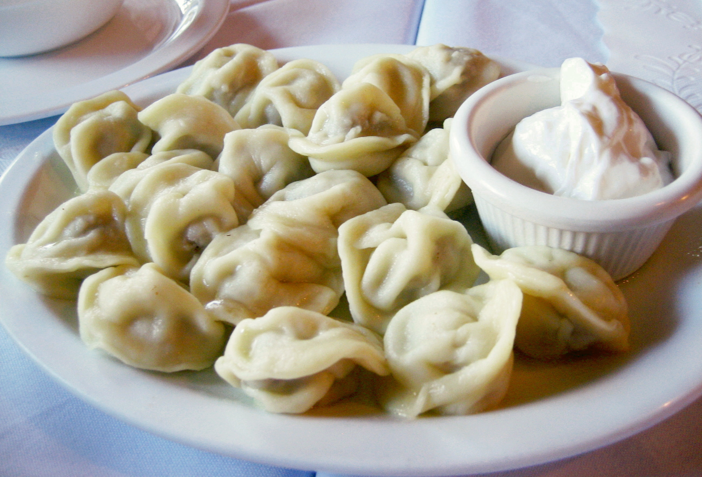

Pelmeni

Description:
Pelmeni are dumplings of Russian cuisine that consist of a filling wrapped in thin, unleavened dough. The debate about the exact place of origin is still active, with Ural and Siberia both maintaining strong claims.
Pelmeni have been described as "the heart of Russian cuisine".
Ingredients
- 300 g flour
- ½ tsp salt
- 1 egg
- 200 ml water
- 1 onion
- 2 cloves garlic
- 150 g ground beef
- 150 g ground pork
- 2 bay leaves
- 100 g sour cream
- dill (for serving)
- flour (for dusting)
- salt
- pepper
Instructions:
- Use a fine sieve to sift flour into a large bowl. Add salt, then use a spoon to make a well in the center of the flour and crack in the egg. Use a fork to whisk the egg into the flour. While whisking, gradually add water until you have a sticky dough. Use your hands to fully integrate any remaining flour into the dough. Transfer dough to a floured work surface, knead until smooth, approx. 3-5 min. Transfer dough back to the bowl, cover with a clean kitchen towel, and let rest for approx. 30 min.
- In the meantime, prepare the filling. Peel and quarter onions. Add onions and peeled garlic cloves to a food processor and blend into a paste. Add ground beef and pork to a large bowl, add onion and garlic paste, and season with salt and pepper. Set aside.
- Transfer rested dough to a floured work surface. Divide the dough into four pieces and roll out each with a rolling pin on a floured work surface.
- Use a round cookie cutter or glass to cut out rounds of dough. Add approx. 1 tsp of the meat filling to the center of each round of dough. Use your hands to fold the circles into a half moon shape, pinching the edges closed. Then, bring the corners together and pinch to close the pelmeni. Repeat with all the dough and filling.
- Bring a large pot of water to boil. Add bay leaves and season with salt. Cook the pelmeni in batches for approx. 5 min., or until they float. Remove with a slotted spoon and serve immediately with sour cream and dill. Enjoy!
Return to recipe index